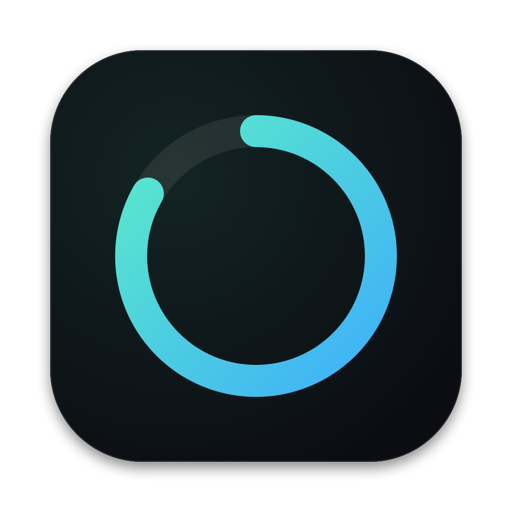
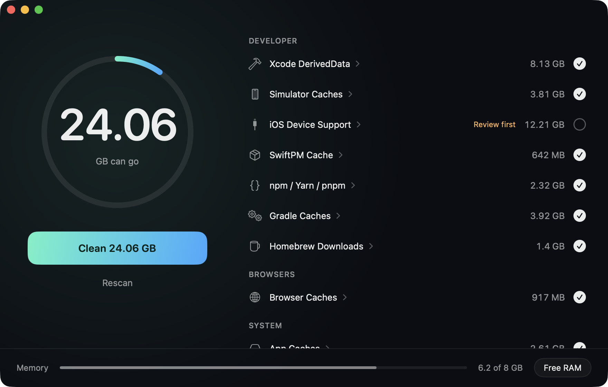
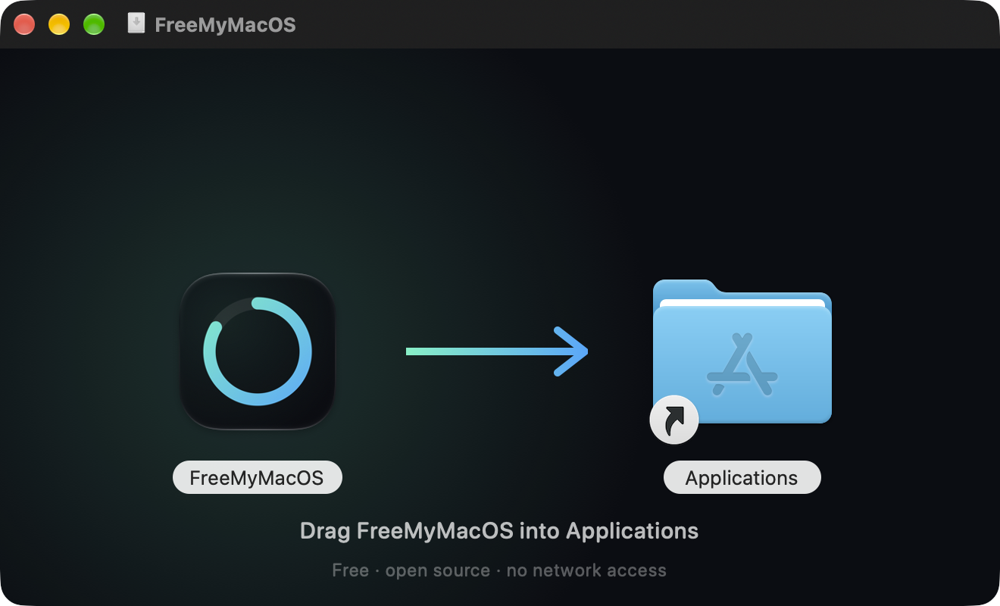

Disk cleanup
Scans a fixed list of cache folders, shows exactly how much each one takes on disk, and empties the ones you pick. Every number is measured, never estimated.

FreeMyMacOS clears the developer and app caches you can safely lose, and shows what is using your memory. Free, open source, and it never touches the internet.

No background scanning, no menu bar agent, no helper daemon. Open it when you need space, close it when you are done.
Scans a fixed list of cache folders, shows exactly how much each one takes on disk, and empties the ones you pick. Every number is measured, never estimated.
Shows used and total memory and the five apps using the most, each with a normal Quit button. Free RAM runs purge after asking for your password.
The folders below stay; only what is inside them goes. Tools you do not have installed are simply hidden. The app never takes a path from you, so nothing outside this list can be deleted.
FreeMyMacOS makes no network requests at all. Your files, sizes and app list stay on your computer.
Version 1.0 SHA-256:873da273ebcbc8b0079b1d9484ab6f89c8466b34137b674dc8c32eaf3b2ba19a

Yes. No trial, no subscription, no paid tier. The code is MIT licensed on GitHub.
Yes, they are removed, not moved to the Trash, because moving them would not free any space. Caches are rebuilt by the apps that use them, which is why only cache folders are on the list. Rows such as Xcode Archives and Trash are marked careful and ask first.
It runs macOS's own purge command, which needs administrator rights. The password goes to the standard macOS prompt; the app never sees it.
Trash and the Safari cache are protected by macOS. Giving the app Full Disk Access unlocks just those two rows; everything else works without it, and the app never asks on its own.
No. There is no menu bar icon, login item or helper. It only does something while its window is open and you press a button.
Any Mac running macOS 14 Sonoma or later, Apple silicon or Intel.